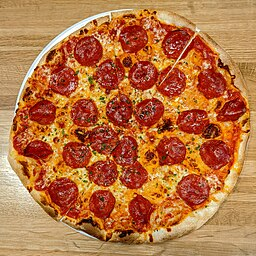

Odin Recipes
Pepperoni Pizza

Description
Pepperoni is an American variety of spicy salami made from cured pork and beef seasoned with paprika and chili peppers. Sliced pepperoni is one of the most popular pizza toppings in American pizzerias.
Ingredients
Pizza Sauce
- 1/2 cup water
- 12 oz tomato paste
- 1 tsp dried oregano, crushed
- 1 tsp dried basil, crushed
- 1/2 tsp garlic powder
- 1/2 tsp onion powder
- 1/2 tsp sugar
- 1/2 tsp salt
- 1/4 tsp black pepper
Pizza Crust
- 3 1/4 cups all purpose flour
- 0.25 oz yeast
- 1 tbsp sugar
- 1 1/2 tsp salt
- 1 1/3 cups warm water
- 1/3 cup oil
Toppings
- 1 cup shredder mozzarell cheese, or more to taste
- 1 (6 ounce) pepperoni
Directions
- Preheat the oven to 425 degrees F (220 degrees C). Grease two 12-inch pizza pans.
- Make sauce: Whisk together water, tomato paste, oregano, basil, garlic powder, onion powder, sugar, salt, and pepper in a medium bowl until smooth. Set aside.
- Make crust: Combine 2 cups flour, yeast, sugar, and salt in a large bowl. Add warm water and oil; mix until well blended, about 1 minute. Gradually add remaining flour, a little at a time, until a soft, sticky dough forms.
- Transfer dough to a floured surface; knead until dough is smooth and elastic, about 4 minutes. Add more flour as needed. (If using RapidRise yeast, let dough rest, covered, for 10 minutes.)
- Divide dough in half. Lightly flour your hands, then pat each piece of dough onto the prepared pizza pans.
- Top dough with sauce, cheese, and pepperoni.
- Bake in the preheated oven until crusts are browned and cheese is bubbly, 18 to 20 minutes. Rotate pizza pans between the top and bottom oven racks halfway through baking.
- Serve and enjoy!
Home